Projet client · Restauration · Cuisine mexicaine · Food truck
Los Tacos Chingones — Logo, identité visuelle & habillage complet
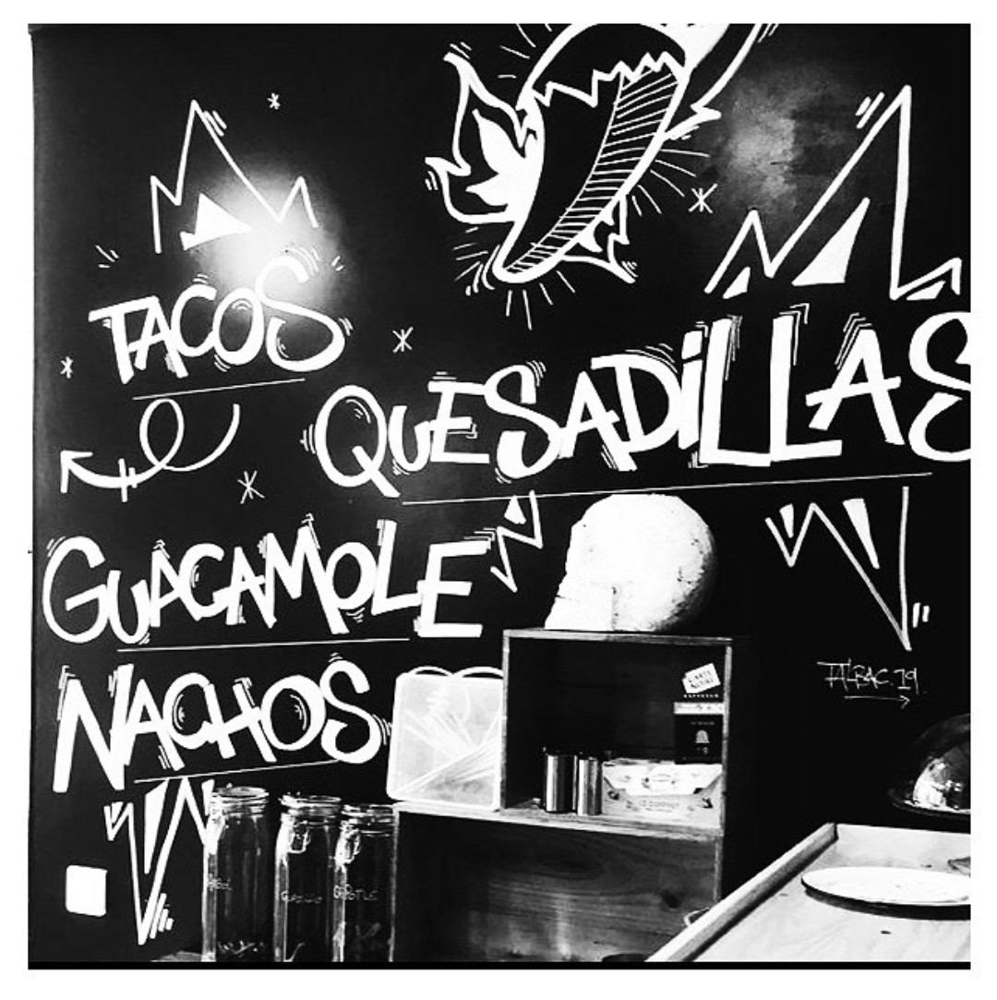
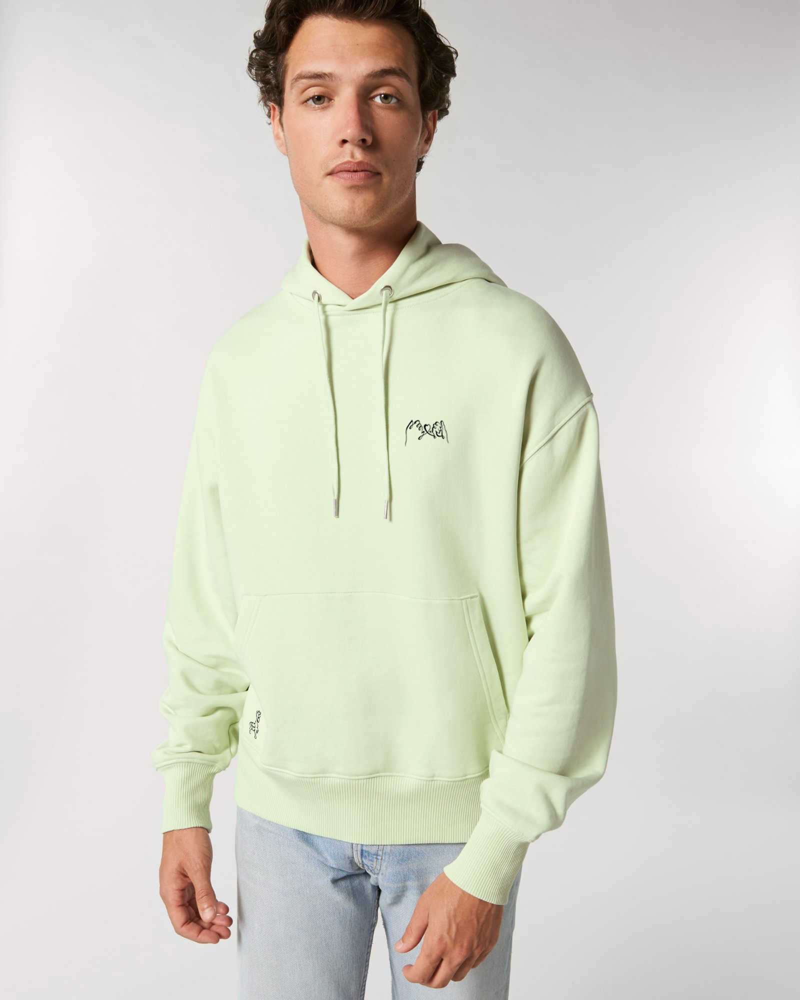
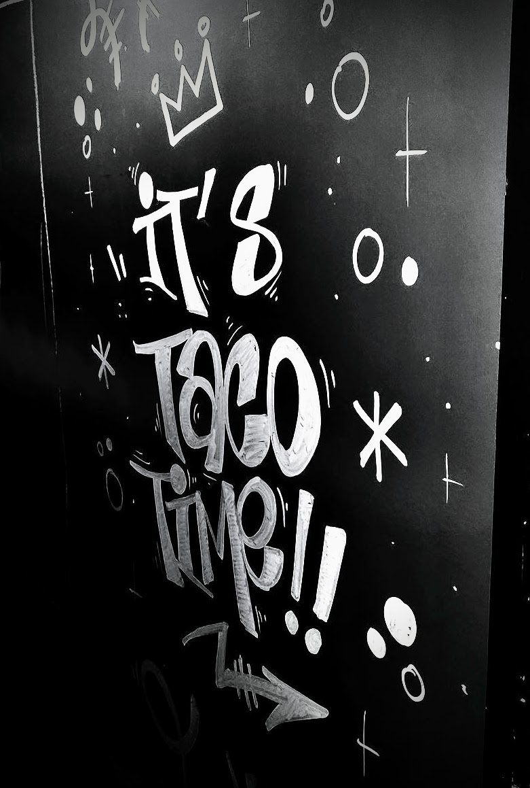
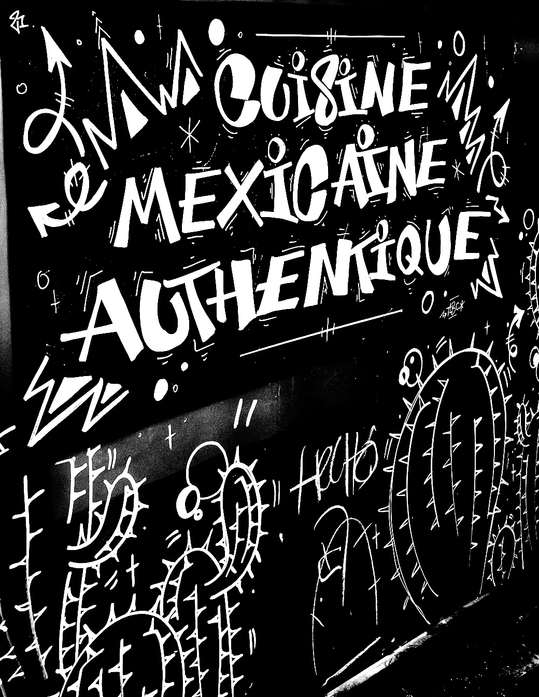
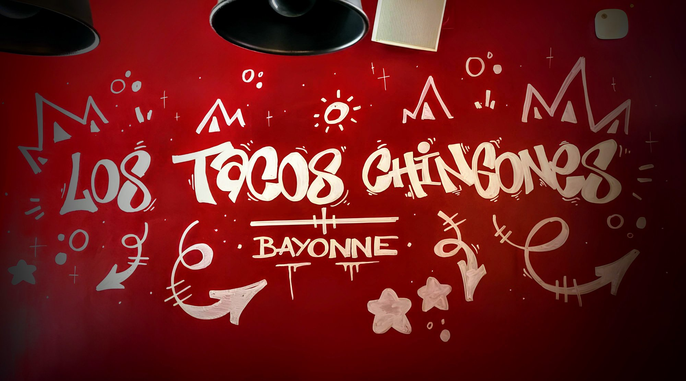
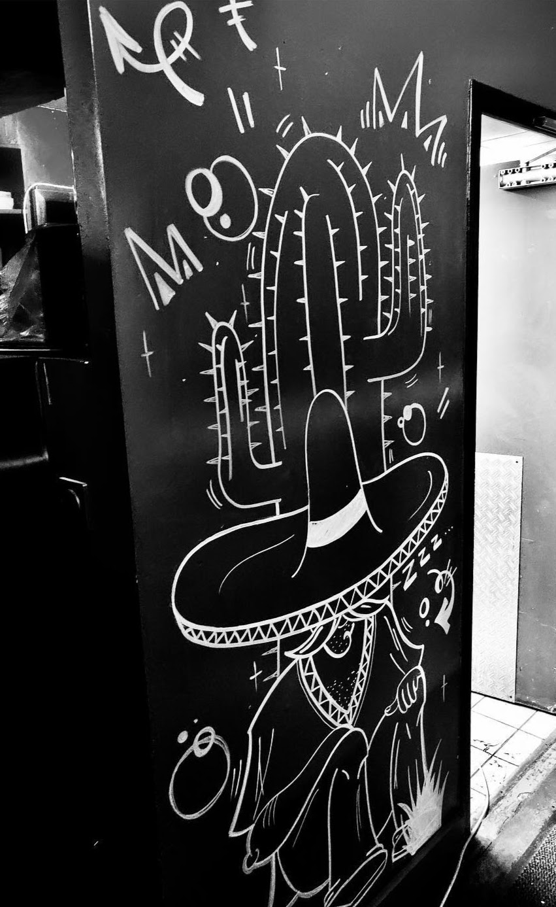
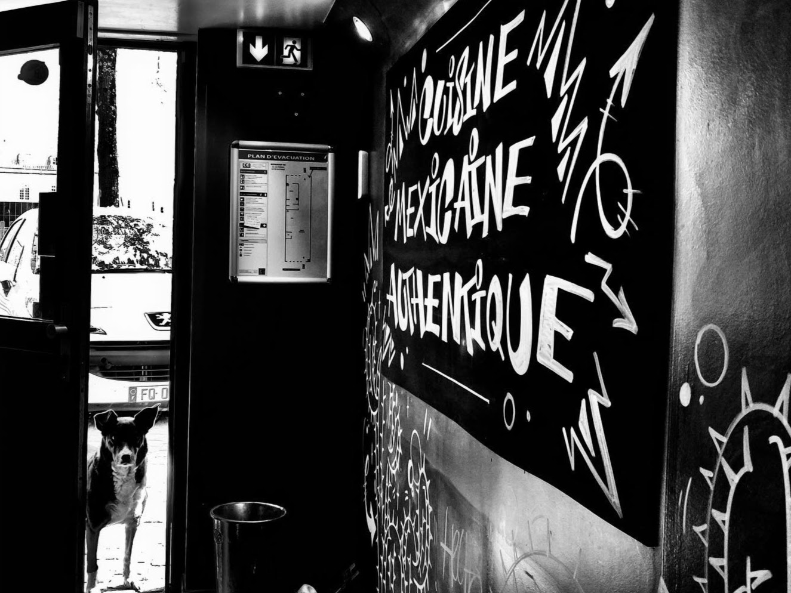
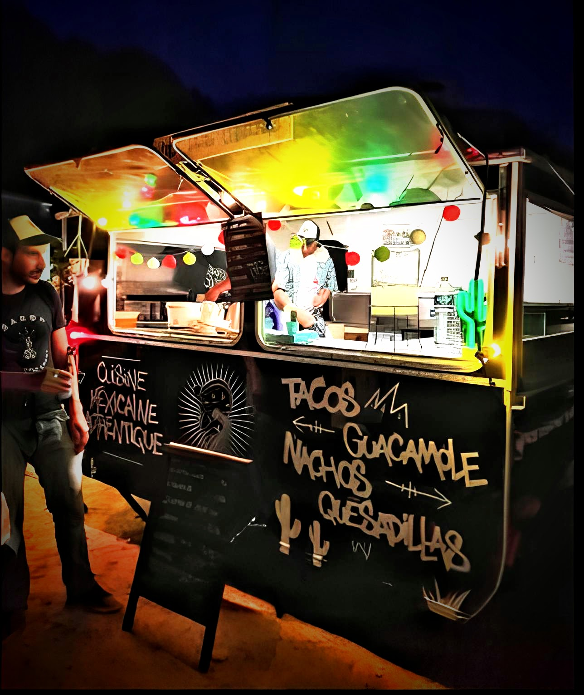
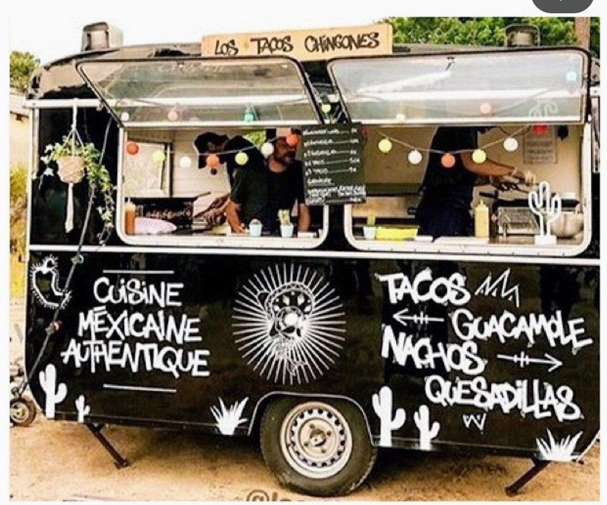
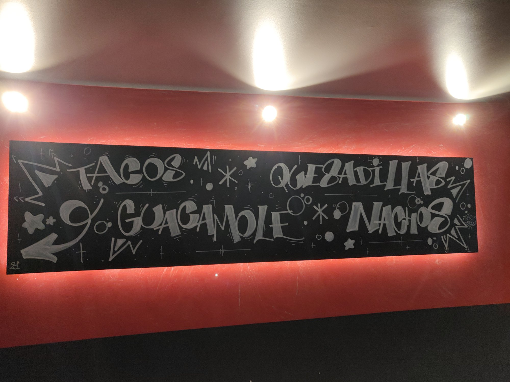
Projet client · Mode · Marque de vêtements
Lamalisse — Logo, calligraphie & déclinaison textile

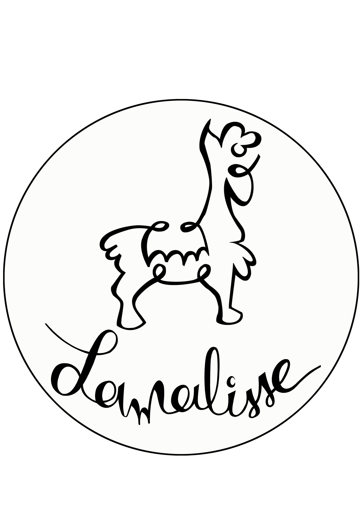

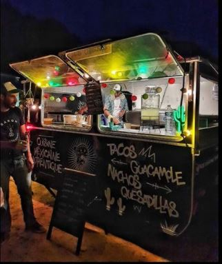

Projet client · Services · Chauffage & Climatisation
Razom Thermique — Identité complète
Projet client · Production musicale
Sunkalo Prod — Logos & identité visuelle
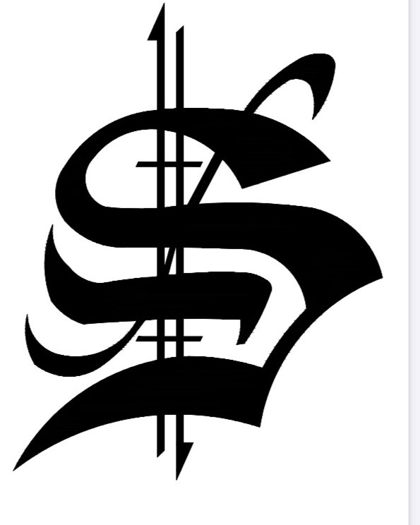
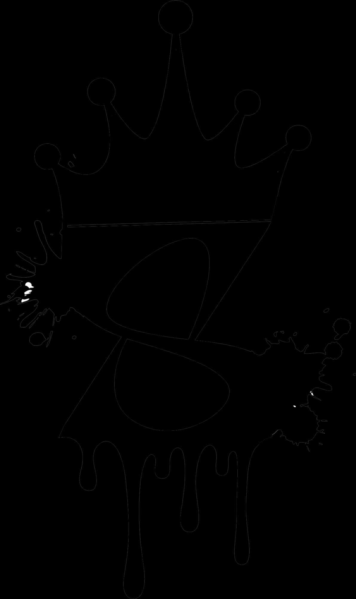